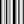

 FFT
Component Index > Millipede > Utilities > FFT
Fast Fourier Transform
Inputs
| Name | ID | Description | Type |
|---|---|---|---|
| Real | Re | Real parts of input values | List of Number |
| Imaginary | Im | Imaginary parts of input values | List of Number |
| Is Forward | Fwd | if true calculate the Forward FFT else Calculate the Inverse | Boolean |
Copyright © 2016 Robert McNeel & Associates.